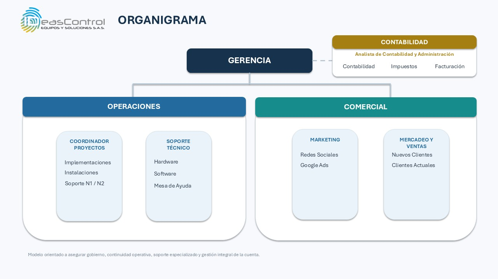

Contenido del documento
- Ficha de Control del Documento
- Control de Cambios
- 1. Título I · Disposiciones generales
- 1.1. Capítulo I · Identificación de la empresa y objeto del reglamento
- 2. Título II · Vinculación y contratación de los trabajadores
- 2.1. Capítulo II · Admisión de los trabajadores
- 2.2. Capítulo III · Contratación
- 2.3. Capítulo IV · Trabajadores transitorios, ocasionales y por obra o labor
- 2.4. Capítulo V · Período de prueba
- 3. Título III · Jornada de trabajo
- 3.1. Capítulo VI · Jornada ordinaria de trabajo
- 3.2. Capítulo VII · Registro y control de asistencia
- 3.3. Capítulo VIII · Descansos
- 3.4. Capítulo IX · Flexibilidad laboral y jornada por responsabilidades de cuidado
- 4. Título IV · Trabajo suplementario, nocturno y en días de descanso
- 4.1. Capítulo X · Trabajo suplementario y horas extras
- 4.2. Capítulo XI · Trabajo nocturno
- 4.3. Capítulo XII · Horas extras diurnas y nocturnas
- 4.4. Capítulo XIII · Trabajo en dominicales y festivos
- 4.5. Capítulo XIV · Disponibilidad laboral
- 4.6. Capítulo XV · Desplazamientos y comisiones de servicio
- 5. Título V · Remuneración y prestaciones
- 5.1. Capítulo XVI · Salario y forma de pago
- 5.2. Capítulo XVII · Prestaciones sociales y seguridad social
- 5.3. Capítulo XVIII · Vacaciones
- 5.4. Capítulo XIX · Permisos
- 5.5. Capítulo XX · Licencias
- 5.6. Capítulo XXI · Capacitación y desarrollo
- 5.7. Capítulo XXII · Bienestar laboral
- 6. Título VI · Servicios, orden y protección especial
- 6.1. Capítulo XXIII · Servicio médico
- 6.2. Capítulo XXIV · Orden jerárquico y conducto regular
- 6.3. Capítulo XXV · Protección especial de menores, mujeres en embarazo o lactancia y personas con discapacidad
- 7. Título VII · Obligaciones, prohibiciones y conflictos de interés
- 7.1. Capítulo XXVI · Obligaciones y prohibiciones del empleador
- 7.2. Capítulo XXVII · Obligaciones de los trabajadores
- 7.3. Capítulo XXVIII · Prohibiciones a los trabajadores
- 7.4. Capítulo XXIX · Conflictos de interés
- 7.5. Capítulo XXX · Confidencialidad y propiedad de la información
- 7.6. Capítulo XXXI · Uso de activos y herramientas
- 7.7. Capítulo XXXII · Vehículos corporativos
- 7.8. Capítulo XXXIII · Representación de la empresa
- 7.9. Capítulo XXXIV · Cumplimiento normativo y ética
- 8. Título VIII · Modalidades de prestación del servicio y herramientas tecnológicas
- 8.1. Capítulo XXXV · Modalidades de prestación del servicio
- 8.2. Capítulo XXXVI · Teletrabajo, trabajo remoto y trabajo en casa
- 8.3. Capítulo XXXVII · Derecho a la desconexión laboral
- 8.4. Capítulo XXXVIII · Uso de herramientas tecnológicas
- 8.5. Capítulo XXXIX · Uso de whatsapp business y canales digitales
- 8.6. Capítulo XL · Inteligencia artificial
- 8.7. Capítulo XLI · Ciberseguridad
- 8.8. Capítulo XLII · Protección de datos personales
- 9. Título IX · Seguridad y salud en el trabajo, igualdad y convivencia
- 9.1. Capítulo XLIII · Seguridad y salud en el trabajo
- 9.2. Capítulo XLIV · Igualdad, inclusión y no discriminación
- 9.3. Capítulo XLV · Prevención del acoso laboral y la violencia en el trabajo
- 9.4. Capítulo XLVI · Comité de convivencia laboral
- 9.5. Capítulo XLVII · Bienestar y calidad de vida
- 9.6. Capítulo XLVIII · Protección del medio ambiente
- 10. Título X · Régimen disciplinario
- 10.1. Capítulo XLIX · Principios y debido proceso
- 10.2. Capítulo L · Faltas disciplinarias
- 10.3. Capítulo LI · Procedimiento disciplinario
- 10.4. Capítulo LII · Sanciones
- 10.5. Capítulo LIII · Recursos
- 10.6. Capítulo LIV · Justas causas
- 10.7. Capítulo LV · Preservación de la evidencia
- 10.8. Capítulo LVI · Disposiciones finales del régimen disciplinario
- 11. Título XI · Reclamaciones, publicación y vigencia
- 11.1. Capítulo LVII · Persona ante quien se presentan las reclamaciones
- 11.2. Capítulo LVIII · Publicación, aprobación y vigencia del reglamento
- 12. Anexo no. 1
- 13. Políticas corporativas complementarias del reglamento interno de trabajo
- 13.1. Capítulo I · Principios éticos
- 13.2. Capítulo II · Derechos humanos
- 13.3. Capítulo III · Inclusión y no discriminación
- 13.4. Capítulo IV · Conflictos de interés
- 13.5. Capítulo V · Regalos, atenciones e invitaciones
- 13.6. Capítulo VI · Anticorrupción y antisoborno
- 13.7. Capítulo VII · Uso de redes sociales
- 13.8. Capítulo VIII · Uso de software
- 13.9. Capítulo IX · Uso de memorias USB y dispositivos externos
- 13.10. Capítulo X · Protección ambiental
- 13.11. Capítulo XI · Cumplimiento del Código de Ética
Proceso relacionado: Administración del talento humano y relaciones laborales
Estado: aprobado y publicado — rige ocho (8) días calendario después de su publicación (Capítulo LVIII)
Ficha de Control del Documento
| Campo | Valor |
|---|---|
| Código del documento | 1103-MAN-GER |
| Título | Reglamento Interno de Trabajo |
| Área responsable | Gestión Humana / Gerencia General |
| Proceso relacionado | Administración del talento humano, relaciones laborales y régimen disciplinario |
| Elaborado por | IDEAS CONTROL EQUIPOS Y SOLUCIONES S.A.S. |
| Revisado por | Margarita Ramírez / Directora Comercial |
| Aprobado por | Patricia Ramírez / Gerente General |
| Fecha de elaboración | Septiembre 2026 |
| Versión vigente | 1.1 |
| Próxima revisión programada | Septiembre 2027 |
| Nivel de confidencialidad | Uso interno Ideas Control |
Control de Cambios
| Versión | Fecha | Descripción del cambio |
|---|---|---|
| 1.0 | Septiembre 2026 | Emisión del proyecto de Reglamento Interno de Trabajo, consolidando el borrador inicial elaborado para Ideas Control y actualizándolo conforme a la Ley 2466 de 2025, la Ley 2101 de 2021, la Ley 2191 de 2022 y demás normas laborales vigentes. Pendiente de revisión jurídica y aprobación de Gerencia. |
| 1.1 | Noviembre 2026 | Actualización de la estructura organizacional: se incorpora el organigrama vigente (Gerencia General; áreas de Operaciones y Comercial; área de apoyo de Contabilidad) y se precisa el orden jerárquico (artículo 91). Se establece que las solicitudes de vacaciones, permisos y licencias del personal del área de Operaciones se tramitan y agendan a través de la Dirección de Operaciones (artículos 73, 77 y 78). Se actualiza el cargo de quien revisa el documento (Directora Comercial). Revisión y aprobación de la Gerencia General y publicación del Reglamento. |
Nota metodológica: este Reglamento consolida el borrador construido progresivamente para Ideas Control, actualizado con los cambios introducidos por la Ley 2466 de 2025 (reforma laboral), la Ley 2101 de 2021 (jornada de 42 horas semanales), la Ley 2191 de 2022 (desconexión laboral) y demás normas vigentes a la fecha.
01Título I · Disposiciones generales
1.1Capítulo I · Identificación de la empresa y objeto del reglamento
Artículo 1. Identificación de la Empresa
IDEAS CONTROL EQUIPOS Y SOLUCIONES S.A.S., identificada con NIT 900.456.589-8, es una sociedad comercial con domicilio principal en la ciudad de Bogotá, República de Colombia, con dirección Calle 85 # 16 -28 Ofc 402 Edificio Comodoro, Código Postal 110221, en adelante LA EMPRESA. Este Reglamento aplica a dicho establecimiento principal y a las demás sedes, oficinas, bodegas o lugares de trabajo que LA EMPRESA tenga habilitados actualmente o llegue a habilitar en el futuro, los cuales se entienden incorporados sin necesidad de modificar este Reglamento.
Artículo 2. Objeto
El presente Reglamento Interno de Trabajo regula las relaciones laborales entre IDEAS CONTROL EQUIPOS Y SOLUCIONES S.A.S., en adelante LA EMPRESA, y todos sus trabajadores vinculados mediante contrato de trabajo, cualquiera sea su modalidad, dando cumplimiento a lo dispuesto en el Código Sustantivo del Trabajo y demás normas laborales vigentes.
Su finalidad es establecer las normas que regulan la prestación personal del servicio, los derechos y obligaciones de las partes, la organización interna del trabajo, las medidas disciplinarias, los procedimientos internos y las disposiciones relacionadas con la seguridad, bienestar y convivencia laboral.
Artículo 3. Ámbito de aplicación
El presente reglamento aplica a todos los trabajadores vinculados mediante contrato de trabajo con LA EMPRESA, independientemente de:
- Tipo de contrato.
- Cargo.
- Nivel jerárquico.
- Lugar donde desarrollen sus funciones.
- Modalidad de trabajo (presencial, remoto, híbrido o teletrabajo).
Las disposiciones aquí contenidas hacen parte integral de los contratos individuales de trabajo.
Artículo 4. Principios
Las relaciones laborales dentro de LA EMPRESA estarán orientadas por los siguientes principios:
- Buena fe.
- Igualdad de oportunidades.
- Respeto mutuo.
- Dignidad humana.
- Transparencia.
- Confidencialidad.
- Protección de la información.
- Cumplimiento normativo.
- Prevención de riesgos laborales.
- Productividad.
- Innovación tecnológica.
- Protección de datos personales.
- Propiedad intelectual
Artículo 5. Normatividad aplicable
El presente Reglamento se fundamenta principalmente en:
- Constitución Política de Colombia.
- Código Sustantivo del Trabajo.
- Ley 2466 de 2025, por la cual se adoptó la reforma laboral.
- Ley 2101 de 2021, sobre la jornada laboral de 42 horas semanales.
- Ley 2191 de 2022, sobre desconexión laboral.
- Ley 1221 de 2008, sobre teletrabajo.
- Ley 2121 de 2021 y su Decreto reglamentario 555 de 2022, sobre trabajo remoto.
- Ley 2088 de 2021, sobre trabajo en casa.
- Ley 1010 de 2006, sobre acoso laboral.
- Ley 1581 de 2012 y sus decretos reglamentarios, sobre protección de datos personales.
- Decreto 1072 de 2015 (Único Reglamentario del Sector Trabajo), sobre el Sistema de Gestión de Seguridad y Salud en el Trabajo.
- Resoluciones 652 y 1356 de 2012, sobre el Comité de Convivencia Laboral.
- Demás normas que las modifiquen, adicionen, reglamenten o sustituyan.
Cuando cualquiera de estas normas sea modificada, el Reglamento se entenderá ajustado en lo pertinente, sin perjuicio de la actualización formal que adelante LA EMPRESA.
02Título II · Vinculación y contratación de los trabajadores
2.1Capítulo II · Admisión de los trabajadores
Artículo 6. Requisitos de ingreso
Para ingresar a laborar en LA EMPRESA, el aspirante deberá presentar, entre otros, los siguientes documentos:
- Documento de identidad.
- Hoja de vida actualizada.
- Certificaciones laborales.
- Certificados académicos.
- Tarjeta profesional cuando aplique.
- Certificado de antecedentes cuando la ley lo permita.
- Información necesaria para afiliaciones al Sistema de Seguridad Social.
- Autorización para el tratamiento de datos personales.
- Demás documentos que exija la legislación o que resulten necesarios según el cargo.
La información suministrada deberá ser veraz. La falsedad documental o la entrega de información inexacta podrá constituir falta grave.
Artículo 7. Exámenes médicos ocupacionales
El trabajador deberá practicarse los exámenes médicos de ingreso, periódicos, de cambio de ocupación y de egreso, conforme a la normatividad vigente en materia de Seguridad y Salud en el Trabajo, a través de la institución prestadora de servicios de medicina laboral que para el efecto designe y sufrague LA EMPRESA.
Los resultados tendrán carácter confidencial y únicamente serán utilizados para fines ocupacionales, de conformidad con la reserva de la historia clínica ocupacional.
Artículo 8. Igualdad de oportunidades en la selección
LA EMPRESA garantizará procesos de selección libres de discriminación por razones de sexo, identidad de género, orientación sexual, raza, origen étnico o nacional, religión, opinión política, discapacidad, edad, estado civil o cualquier otra condición protegida por la Constitución y la ley.
La selección se realizará con base en criterios de mérito, competencias, experiencia y perfil requerido para el cargo. LA EMPRESA propenderá, dentro de sus posibilidades organizacionales, por la vinculación de personas con discapacidad, jóvenes, mujeres y personas en condición de vulnerabilidad, en los términos del artículo 15 de la Ley 2466 de 2025 y demás normas sobre inclusión laboral aplicables según el tamaño de la empresa.
2.2Capítulo III · Contratación
Artículo 9. Modalidades de contrato
LA EMPRESA podrá celebrar las modalidades de contrato permitidas por la legislación laboral colombiana, incluyendo:
- Contrato a término indefinido.
- Contrato a término fijo.
- Contrato por obra o labor determinada.
- Contrato ocasional, accidental o transitorio.
- Contrato de aprendizaje, cuando sea procedente.
De conformidad con el artículo 5° de la Ley 2466 de 2025, la vinculación mediante contrato a término indefinido constituye la regla general. Las demás modalidades solo se emplearán cuando la naturaleza de la labor lo justifique.
Artículo 10. Contrato a término fijo
El contrato a término fijo no podrá exceder, en su duración total incluidas las prórrogas, cuatro (4) años, conforme al artículo 6° de la Ley 2466 de 2025. Si el término pactado inicialmente es inferior a un (1) año, podrá prorrogarse sucesivamente, pero a partir de la cuarta (4ª) prórroga el término de renovación no podrá ser inferior a un (1) año.
Si ninguna de las partes da aviso escrito de no renovación con una antelación no inferior a treinta (30) días calendario a la fecha de vencimiento, el contrato se entenderá renovado por un término igual al inicialmente pactado, sin superar el límite de cuatro (4) años.
Artículo 11. Contrato por obra o labor determinada
En el contrato por obra o labor deberá especificarse por escrito, de forma precisa y detallada, la obra o labor contratada. Si vencida la obra o labor el trabajador continúa prestando el servicio sin que se suscriba un nuevo contrato para una obra o labor nueva y diferente, se presumirá que la vinculación es a término indefinido desde el inicio de la relación laboral.
Artículo 12. Terminación del contrato por renuncia
El trabajador que decida renunciar deberá dar aviso previo a LA EMPRESA con una antelación de treinta (30) días calendario, con el fin de permitir su reemplazo, conforme al artículo 5° de la Ley 2466 de 2025. En ningún caso podrá pactarse una sanción económica por la omisión de este preaviso.
El trabajador podrá dar por terminado el contrato sin necesidad de preaviso cuando exista una causa imputable a LA EMPRESA, sin perjuicio de acudir a los mecanismos de solución de conflictos o a la vía judicial para efectos indemnizatorios.
Artículo 13. Contenido del contrato
Todo contrato deberá constar por escrito cuando así lo exija la ley o cuando LA EMPRESA lo considere conveniente. Como mínimo contendrá:
- Identificación de las partes.
- Cargo.
- Funciones.
- Lugar de prestación del servicio.
- Salario.
- Jornada laboral.
- Período de prueba, cuando exista.
- Beneficios adicionales.
- Cláusulas de confidencialidad, propiedad intelectual y tratamiento de datos, cuando correspondan.
Artículo 14. Confidencialidad
Todo trabajador estará obligado a guardar estricta reserva sobre la información técnica, comercial, financiera, estratégica y tecnológica a la que tenga acceso durante la ejecución de sus funciones. Esta obligación subsistirá aun después de la terminación del contrato de trabajo.
Artículo 15. Propiedad intelectual
Todo trabajador deberá guardar estricta reserva sobre la información no pública de LA EMPRESA, sus clientes, proveedores, aliados comerciales y demás terceros con los que mantenga relaciones empresariales, a la que tenga acceso por razón de sus funciones. Esta obligación comprende, entre otros, información técnica, financiera, administrativa, contable, comercial, estratégica y operativa; listas y bases de datos de clientes y prospectos; precios, costos, márgenes, descuentos, cotizaciones, propuestas, contratos, negociaciones, planes comerciales, documentación de proyectos, procedimientos internos y conocimientos técnicos o comerciales reservados.
La información no podrá ser divulgada, copiada, transferida, publicada, comercializada ni utilizada para fines personales o en beneficio de terceros sin autorización previa de LA EMPRESA, salvo que exista obligación legal de revelarla o autorización legítima para hacerlo
Artículo 16. Aceptación del Reglamento
La firma del contrato de trabajo implica el conocimiento y aceptación del presente Reglamento Interno de Trabajo, sin perjuicio de la obligación de LA EMPRESA de divulgarlo y mantenerlo disponible para consulta de todos los trabajadores, conforme al Capítulo LVIII de este Reglamento.
2.3Capítulo IV · Trabajadores transitorios, ocasionales y por obra o labor
Artículo 17. Trabajadores accidentales o transitorios
Son trabajadores ocasionales, accidentales o transitorios los que se ocupan en labores de corta duración, distintas de las actividades normales de LA EMPRESA. A estos trabajadores les serán aplicables las disposiciones generales de este Reglamento en cuanto resulten compatibles con la naturaleza y duración de su vinculación, así como los derechos mínimos irrenunciables consagrados en el Código Sustantivo del Trabajo.
LA EMPRESA velará porque esta modalidad no se utilice para encubrir relaciones laborales de carácter permanente, de conformidad con el principio de primacía de la realidad sobre las formalidades.
2.4Capítulo V · Período de prueba
Artículo 18. Definición
El período de prueba es la etapa inicial del contrato de trabajo durante la cual LA EMPRESA y el trabajador verifican la conveniencia de la relación laboral, las competencias del trabajador para el cargo y las condiciones en que se desarrollará la prestación personal del servicio. Durante este período cualquiera de las partes podrá dar por terminado el contrato conforme a la legislación laboral vigente.
Artículo 19. Pactación
El período de prueba deberá constar expresamente por escrito dentro del contrato de trabajo. En ausencia de estipulación escrita, se entenderá que no existe período de prueba.
Artículo 20. Duración
La duración del período de prueba será la permitida por el Código Sustantivo del Trabajo y las normas que lo modifiquen. Cuando se celebren contratos sucesivos entre las mismas partes para el mismo cargo o funciones equivalentes, no podrá pactarse un nuevo período de prueba salvo que la legislación expresamente lo permita.
Artículo 21. Derechos durante el período de prueba
Durante el período de prueba el trabajador gozará de todos los derechos laborales, salariales, prestacionales y de seguridad social establecidos en la legislación colombiana.
03Título III · Jornada de trabajo
3.1Capítulo VI · Jornada ordinaria de trabajo
Artículo 22. Jornada máxima legal
La jornada ordinaria máxima de trabajo es de ocho (8) horas al día y cuarenta y dos (42) horas a la semana, de conformidad con el artículo 161 del Código Sustantivo del Trabajo, modificado por el artículo 11 de la Ley 2466 de 2025, en concordancia con la reducción gradual prevista en la Ley 2101 de 2021, la cual culminó su última etapa el 15 de julio de 2026.
Cuando la ley modifique nuevamente la jornada máxima legal, LA EMPRESA la aplicará de manera automática, sin que se requiera modificar formalmente este Reglamento.
Artículo 23. Distribución de la jornada
La jornada semanal podrá distribuirse en cinco (5) o seis (6) días, garantizando siempre un día de descanso obligatorio. LA EMPRESA podrá establecer jornadas de:
- lunes a viernes;
- lunes a sábado;
- turnos rotativos;
- jornadas continuas;
- jornadas flexibles;
- horarios escalonados;
- las demás modalidades permitidas por la ley.
En la modalidad de jornada flexible, la duración diaria podrá oscilar entre un mínimo de cuatro (4) horas continuas y un máximo de nueve (9) horas, sin que ello genere recargo por trabajo suplementario, siempre que el promedio semanal no exceda de cuarenta y dos (42) horas, conforme al artículo 11 de la Ley 2466 de 2025.
LA EMPRESA no podrá contratar a un mismo trabajador para desarrollar dos (2) turnos en un mismo día, salvo en los cargos de dirección, confianza y manejo, o cuando se trate de labores de supervisión, conforme a la ley.
Artículo 24. Horarios
Los horarios de trabajo serán definidos por LA EMPRESA teniendo en cuenta:
- necesidades operativas;
- atención a clientes;
- proyectos especiales;
- instalaciones técnicas;
- actividades comerciales;
- soporte remoto;
- servicios de mantenimiento.
Los horarios podrán modificarse por razones organizacionales, informando previamente al trabajador cuando así lo exija la ley.
Artículo 25. Personal técnico
El personal encargado de instalaciones, mantenimiento, soporte técnico, tecnología RFID, biometría, control de acceso, inventarios tecnológicos o servicios en campo, podrá laborar en horarios diferentes al administrativo, siempre respetando la jornada máxima legal y los descansos obligatorios.
Artículo 26. Personal comercial
Los trabajadores del área comercial podrán desarrollar actividades fuera de las oficinas de LA EMPRESA para visitas comerciales, demostraciones, capacitaciones, ferias, acompañamiento a clientes o reuniones técnicas. El tiempo empleado hará parte de la jornada cuando corresponda conforme a la ley y a las funciones asignadas.
Artículo 27. Personal remoto e híbrido
Los trabajadores que laboren en modalidad remota, híbrida o de teletrabajo deberán cumplir la jornada asignada y registrar oportunamente su tiempo de trabajo mediante los mecanismos establecidos por LA EMPRESA.
Artículo 28. Trabajadores menores de edad
En caso de que LA EMPRESA vincule trabajadores menores de dieciocho (18) años, previo el cumplimiento de las autorizaciones exigidas por el Código de la Infancia y la Adolescencia y demás normas concordantes, la jornada de trabajo se sujetará a los siguientes límites: los adolescentes entre quince (15) y diecisiete (17) años no podrán trabajar más de seis (6) horas diarias ni treinta (30) horas semanales, en jornada diurna y hasta las 6:00 p.m.; los mayores de diecisiete (17) años no podrán trabajar más de ocho (8) horas diarias ni cuarenta (40) horas semanales.
3.2Capítulo VII · Registro y control de asistencia
Artículo 29. Registro
Todo trabajador deberá registrar el inicio y terminación de su jornada utilizando cualquiera de los siguientes mecanismos autorizados:
- biometría;
- reconocimiento facial;
- tarjetas de proximidad;
- aplicación móvil;
- plataforma web;
- sistema RFID;
- software corporativo;
- cualquier otra tecnología implementada por LA EMPRESA.
Artículo 30. Exactitud del registro
Cada trabajador será responsable del registro correcto de su jornada. Está prohibido registrar el ingreso o salida de otro trabajador. Esta conducta constituirá falta disciplinaria grave.
Artículo 31. Omisión del registro
Cuando por razones técnicas no sea posible efectuar el registro, el trabajador deberá informar inmediatamente a su jefe inmediato para que se realice la validación correspondiente.
Artículo 32. Horas laboradas
Únicamente se reconocerá como tiempo laborado aquel que corresponda a actividades autorizadas por LA EMPRESA. La permanencia voluntaria en las instalaciones fuera del horario ordinario no constituye trabajo suplementario salvo autorización expresa.
3.3Capítulo VIII · Descansos
Artículo 33. Descanso semanal
Todo trabajador tendrá derecho al descanso semanal remunerado conforme a la legislación vigente.
Artículo 34. Pausas activas
LA EMPRESA promoverá pausas activas durante la jornada laboral de conformidad con el Sistema de Gestión de Seguridad y Salud en el Trabajo. Las cuales deben ser ejecutadas por el trabajador.
Artículo 35. Descanso para alimentación
LA EMPRESA podrá establecer tiempos destinados a alimentación, los cuales no constituirán tiempo efectivo de trabajo salvo disposición legal o contractual en contrario.
Artículo 36. Descanso entre jornadas
Entre una jornada y otra deberá respetarse el tiempo mínimo de descanso previsto por la legislación laboral vigente.
3.4Capítulo IX · Flexibilidad laboral y jornada por responsabilidades de cuidado
Artículo 37. Distribución flexible
Con el fin de favorecer la productividad, la conciliación entre la vida laboral y familiar y la adecuada prestación del servicio, LA EMPRESA podrá implementar esquemas de distribución flexible de la jornada dentro de los límites legales.
Artículo 38. Jornadas especiales
Cuando la naturaleza del servicio lo requiera, podrán establecerse jornadas especiales para:
- proyectos de implementación;
- atención a clientes nacionales e internacionales;
- soporte técnico;
- mantenimientos programados;
- inventarios físicos;
- instalaciones fuera de la ciudad;
- eventos corporativos.
Estas jornadas deberán cumplir las condiciones previstas en la legislación laboral.
Artículo 39. Disponibilidad
Cuando por la naturaleza del cargo se requieran períodos de disponibilidad, estos deberán pactarse conforme a la legislación vigente y no implicarán por sí solos la prestación efectiva del servicio, salvo que el trabajador sea llamado a ejecutar actividades concretas.
Artículo 40. Jornada flexible por responsabilidades de cuidado
El trabajador que tenga a su cargo el cuidado de menores de edad, personas mayores, personas con discapacidad o personas con enfermedad catastrófica, hasta el segundo grado de consanguinidad, primero de afinidad o primero civil, podrá solicitar por escrito a LA EMPRESA un horario o una distribución flexible de la jornada, proponiendo la alternativa que considere adecuada y acreditando la responsabilidad de cuidado invocada, de conformidad con el artículo 46 de la Ley 2466 de 2025.
LA EMPRESA dará respuesta a la solicitud dentro de los quince (15) días hábiles siguientes, aceptándola, negándola de manera motivada, o formulando una propuesta alternativa que concilie las necesidades del trabajador con las necesidades del servicio.
04Título IV · Trabajo suplementario, nocturno y en días de descanso
4.1Capítulo X · Trabajo suplementario y horas extras
Artículo 41. Trabajo suplementario
Se entiende por trabajo suplementario o de horas extras el que se realiza por fuera de la jornada ordinaria de trabajo legalmente establecida o de la jornada pactada entre las partes, siempre que haya sido previamente autorizado por LA EMPRESA. El trabajo suplementario tendrá carácter excepcional y solo podrá realizarse cuando existan necesidades del servicio, atención de emergencias, cumplimiento de compromisos contractuales o circunstancias especiales debidamente justificadas.
Artículo 42. Límites del trabajo suplementario
El trabajo suplementario no podrá exceder de dos (2) horas diarias ni de doce (12) horas semanales, conforme al artículo 162 del Código Sustantivo del Trabajo, modificado por el artículo 12 de la Ley 2466 de 2025. LA EMPRESA velará porque la programación de horas extras no afecte la salud, seguridad y bienestar del trabajador ni desconozca los tiempos mínimos de descanso.
El otorgamiento de permisos para trabajar horas extras no requiere autorización previa del Ministerio del Trabajo; corresponde a LA EMPRESA autorizarlas internamente en los términos de este Reglamento, sin perjuicio de la facultad de vigilancia del Ministerio del Trabajo, que podrá suspender hasta por seis (6) meses la facultad de LA EMPRESA para reconocer horas extras en caso de incumplimiento reiterado de los límites legales.
Artículo 43. Autorización para laborar horas extras
Ningún trabajador podrá laborar horas extras por iniciativa propia. Toda labor suplementaria deberá ser autorizada previamente por:
- Gerente General;
- Director del área;
- Jefe inmediato debidamente autorizado.
La autorización podrá realizarse mediante correo electrónico corporativo, sistema de gestión de proyectos, plataforma de control de tiempo u otro medio institucional definido por LA EMPRESA. La ausencia de autorización impedirá el reconocimiento de horas extras, salvo que LA EMPRESA haya ordenado expresamente la prestación del servicio o exista prueba suficiente de la necesidad y autorización.
Artículo 44. Registro de horas extras
LA EMPRESA llevará un registro de trabajo suplementario con indicación del nombre del trabajador, la actividad desarrollada y el número de horas diurnas o nocturnas laboradas, conforme al artículo 13 de la Ley 2466 de 2025. Dicho registro se entregará al trabajador junto con el comprobante de pago correspondiente.
El trabajador deberá verificar que el registro corresponda efectivamente al tiempo autorizado. La alteración, manipulación o falsificación de registros constituirá falta disciplinaria grave.
4.2Capítulo XI · Trabajo nocturno
Artículo 45. Jornada nocturna
Se considera trabajo nocturno el ejecutado entre las siete de la noche (7:00 p.m.) y las seis de la mañana (6:00 a.m.), conforme al artículo 160 del Código Sustantivo del Trabajo, modificado por el artículo 10 de la Ley 2466 de 2025. LA EMPRESA aplicará automáticamente cualquier modificación legal relacionada con el inicio, finalización o condiciones del trabajo nocturno, sin necesidad de reformar nuevamente este Reglamento.
Artículo 46. Recargo nocturno
Las horas laboradas durante la jornada nocturna darán lugar al reconocimiento del recargo legal correspondiente, de conformidad con la normatividad vigente.
Artículo 47. Personal sujeto a trabajo nocturno
Podrán desarrollar actividades en horario nocturno, cuando las necesidades del servicio así lo requieran: ingenieros de soporte, técnicos de instalación, personal de mantenimiento, personal de mesa de ayuda, personal de monitoreo y demás trabajadores cuya labor requiera atención fuera del horario diurno.
Artículo 48. Programación
La programación del trabajo nocturno será organizada procurando distribuir equitativamente la carga laboral y respetando los períodos mínimos de descanso establecidos por la ley.
4.3Capítulo XII · Horas extras diurnas y nocturnas
Artículo 49. Liquidación
Las horas extras diurnas y nocturnas serán remuneradas conforme a los porcentajes establecidos por la legislación laboral vigente al momento de su causación. LA EMPRESA actualizará automáticamente la aplicación de dichos porcentajes cuando sean modificados por disposición legal.
Artículo 50. Compensación
Cuando la ley lo permita y exista acuerdo entre las partes, las horas extras podrán compensarse mediante descanso remunerado, en los términos autorizados por la legislación vigente.
Artículo 51. Exclusiones
No constituye trabajo suplementario:
- permanecer voluntariamente en la oficina;
- revisar correos electrónicos sin autorización;
- utilizar equipos de LA EMPRESA fuera del horario laboral;
- permanecer en las instalaciones después de terminar la jornada por asuntos personales.
4.4Capítulo XIII · Trabajo en dominicales y festivos
Artículo 52. Prestación del servicio
Cuando la naturaleza del servicio lo exija, LA EMPRESA podrá programar labores en domingos o días festivos conforme a la legislación laboral vigente. Esta programación podrá ser necesaria para: instalaciones en clientes, mantenimiento preventivo o correctivo, migraciones tecnológicas, implementación de software, inventarios RFID, proyectos especiales, atención de emergencias técnicas o soporte crítico.
Artículo 53. Remuneración y calendario de aplicación gradual
El trabajo realizado en el día de descanso obligatorio (domingo) o festivo da derecho a un recargo del cien por ciento (100%) sobre el salario ordinario en proporción a las horas laboradas, sin perjuicio de la remuneración ordinaria a que tiene derecho el trabajador por haber laborado en dicho día, conforme al artículo 179 del Código Sustantivo del Trabajo, modificado por el artículo 14 de la Ley 2466 de 2025.
Dicho recargo se aplicará de manera gradual conforme al siguiente calendario de transición: ochenta por ciento (80%) desde el 1 de julio de 2025; noventa por ciento (90%) desde el 1 de julio de 2026; y cien por ciento (100%) a partir del 1 de julio de 2027. LA EMPRESA podrá adoptar anticipadamente el recargo del cien por ciento (100%) si así lo decide. El trabajo dominical se clasifica en ocasional (hasta dos veces al mes) y habitual (tres o más veces al mes), para los efectos previstos en la ley.
Artículo 54. Descanso compensatorio
Cuando la ley así lo establezca, el trabajador tendrá derecho al descanso compensatorio remunerado correspondiente.
Artículo 55. Programación anticipada
Siempre que las condiciones operativas lo permitan, LA EMPRESA procurará informar con antelación la programación de labores dominicales y festivas.
4.5Capítulo XIV · Disponibilidad laboral
Artículo 56. Disponibilidad
Determinados cargos podrán requerir disponibilidad para atender situaciones extraordinarias relacionadas con: fallas de infraestructura, incidentes tecnológicos, soporte a clientes, implementación de proyectos o atención de emergencias. La disponibilidad no implica necesariamente prestación efectiva del servicio.
Artículo 57. Activación
Cuando durante el período de disponibilidad el trabajador sea efectivamente requerido para ejecutar labores, el tiempo laborado será reconocido conforme a la legislación vigente.
Artículo 58. Atención de incidentes críticos
LA EMPRESA podrá conformar equipos de respuesta para atender incidentes tecnológicos críticos, garantizando el cumplimiento de los tiempos máximos de trabajo y descanso previstos por la ley.
4.6Capítulo XV · Desplazamientos y comisiones de servicio
Artículo 59. Comisiones
Los trabajadores podrán ser comisionados para prestar servicios en las instalaciones de clientes dentro o fuera del territorio nacional.
Artículo 60. Jornada durante desplazamientos
El tiempo de desplazamiento será reconocido conforme a la legislación laboral aplicable y a las políticas internas de LA EMPRESA, teniendo en cuenta si constituye tiempo efectivo de trabajo.
Artículo 61. Gastos de viaje
LA EMPRESA reconocerá los gastos de viaje previamente autorizados, de acuerdo con las políticas corporativas vigentes.
Artículo 62. Obligaciones durante las comisiones
Durante las comisiones de servicio, el trabajador deberá:
- representar adecuadamente a LA EMPRESA;
- cumplir las normas del cliente;
- proteger la información confidencial;
- utilizar correctamente los equipos entregados;
- observar las normas de Seguridad y Salud en el Trabajo;
- informar cualquier incidente o accidente.
05Título V · Remuneración y prestaciones
5.1Capítulo XVI · Salario y forma de pago
Artículo 63. Remuneración
Todo trabajador tendrá derecho a recibir la remuneración pactada en el contrato de trabajo, la cual no podrá ser inferior al salario mínimo legal mensual vigente (SMLMV) cuando la jornada corresponda a tiempo completo, salvo las excepciones previstas en la ley. La remuneración comprenderá los conceptos salariales y no salariales definidos en la legislación laboral y en el contrato de trabajo.
Para efectos informativos, a la fecha de elaboración de este Reglamento el salario mínimo legal mensual vigente para 2026 es de $1.750.905 y el auxilio de transporte es de $249.095 mensuales, conforme a los Decretos 1469 y 1470 de 2025. Estos valores se actualizarán automáticamente cada vez que el Gobierno Nacional los modifique, sin necesidad de reformar este Reglamento.
Los factores para la determinación objetiva del salario y los beneficios deberán considerar, conforme al artículo 9° de la Ley 2466 de 2025, las capacidades y cualificaciones exigidas para el cargo, el esfuerzo físico y mental requerido, las responsabilidades asignadas y las condiciones en que se presta el servicio.
Artículo 64. Forma de pago
El salario será pagado mediante consignación electrónica en la cuenta bancaria registrada por el trabajador o por cualquier otro medio autorizado por la legislación vigente. El trabajador deberá informar oportunamente cualquier cambio en sus datos bancarios.
Artículo 65. Periodicidad del pago
LA EMPRESA efectuará el pago de salarios en la periodicidad definida en el contrato de trabajo o en la política interna de nómina. Cuando la fecha de pago coincida con un día no hábil, LA EMPRESA procurará realizar el pago el día hábil inmediatamente anterior, siempre que las condiciones operativas lo permitan.
Artículo 66. Comprobantes de pago
LA EMPRESA entregará al trabajador el comprobante de nómina en formato físico o electrónico, el cual contendrá el detalle de los conceptos salariales, prestaciones, deducciones y demás valores liquidados.
Artículo 67. Deducciones
Solo podrán efectuarse deducciones autorizadas por la ley, por orden judicial o por autorización expresa y escrita del trabajador cuando esta sea legalmente procedente.
5.2Capítulo XVII · Prestaciones sociales y seguridad social
Artículo 68. Reconocimiento de prestaciones
LA EMPRESA reconocerá y pagará oportunamente las prestaciones sociales previstas en la legislación laboral colombiana, incluyendo, entre otras:
- Cesantías.
- Intereses a las cesantías.
- Prima de servicios.
- Vacaciones.
- Auxilio de transporte, cuando corresponda.
- Demás beneficios establecidos por la ley.
Artículo 69. Seguridad Social Integral
LA EMPRESA afiliará a todos sus trabajadores al Sistema de Seguridad Social Integral conforme a la legislación vigente, garantizando los aportes a salud, pensión y riesgos laborales. Asimismo, realizará los aportes parafiscales a que haya lugar.
Artículo 70. Beneficios extralegales
LA EMPRESA podrá otorgar beneficios adicionales a los previstos por la ley, de acuerdo con sus políticas internas y disponibilidad presupuestal. Estos beneficios no constituirán salario salvo disposición legal o pacto expreso en contrario.
5.3Capítulo XVIII · Vacaciones
Artículo 71. Derecho a vacaciones
Todo trabajador que cumpla el tiempo de servicios exigido por la ley tendrá derecho al disfrute de vacaciones remuneradas en los términos establecidos por el Código Sustantivo del Trabajo.
Artículo 72. Programación
Las vacaciones serán programadas por LA EMPRESA teniendo en cuenta las necesidades del servicio, la continuidad operativa, la solicitud del trabajador y la adecuada planeación de las actividades. LA EMPRESA procurará concertar con el trabajador las fechas de disfrute.
Artículo 73. Solicitud
Las solicitudes de vacaciones deberán presentarse con una anticipación mínima de treinta (30) días calendario, salvo casos excepcionales debidamente justificados. Las solicitudes se presentan ante el jefe inmediato o el director del área; en el caso del personal del área de Operaciones, se tramitan y agendan a través de la Dirección de Operaciones, que validará su impacto en la programación de servicios y proyectos antes de su aprobación.
Artículo 74. Acumulación y compensación
La acumulación y compensación en dinero de las vacaciones procederán únicamente en los casos y bajo las condiciones autorizadas por la legislación laboral vigente.
Artículo 75. Interrupción
Las vacaciones podrán interrumpirse únicamente por las causas previstas en la ley o por mutuo acuerdo entre las partes cuando sea jurídicamente procedente.
5.4Capítulo XIX · Permisos
Artículo 76. Permisos remunerados
LA EMPRESA concederá los permisos remunerados previstos en la legislación laboral y aquellos que, por razones de solidaridad, bienestar o interés institucional, autorice la Gerencia.
Artículo 77. Solicitud de permisos
Los permisos deberán solicitarse por escrito con la mayor anticipación posible, indicando motivo, fecha, duración y soportes cuando sean necesarios. En situaciones de emergencia el trabajador deberá informar tan pronto le sea posible. Las solicitudes de permisos y licencias del personal del área de Operaciones se tramitan y agendan a través de la Dirección de Operaciones; salvo las emergencias aquí previstas, ninguna ausencia se entenderá autorizada sin este trámite previo.
Artículo 78. Permisos no remunerados
LA EMPRESA podrá conceder permisos no remunerados cuando las circunstancias lo permitan y exista acuerdo entre las partes. La autorización corresponderá a la Gerencia o a quien esta delegue; para el personal del área de Operaciones, previa validación de la Dirección de Operaciones.
5.5Capítulo XX · Licencias
Artículo 79. Licencias legales
LA EMPRESA reconocerá las licencias establecidas por la legislación laboral colombiana, entre ellas las relacionadas con:
- Maternidad, paternidad y adopción.
- Calamidad doméstica grave, entendida esta hasta el tercer grado de consanguinidad, segundo de afinidad y primero civil.
- Luto.
- Ejercicio del sufragio.
- Desempeño de cargos oficiales de forzosa aceptación o comisiones sindicales.
- Citaciones judiciales, administrativas o legales.
- Citas médicas de urgencia y citas médicas programadas con especialista, incluidas las relacionadas con endometriosis conforme a la Ley 2338 de 2023.
- Obligaciones escolares del trabajador acudiente, cuando medie requerimiento del centro educativo.
- Un (1) día remunerado cada seis (6) meses para los trabajadores que certifiquen el uso habitual de la bicicleta como medio de transporte al trabajo.
- Demás licencias obligatorias previstas en la ley.
Este listado incorpora las licencias adicionadas al numeral 6° del artículo 57 del Código Sustantivo del Trabajo por el artículo 15 de la Ley 2466 de 2025.
Artículo 80. Licencias convencionales
LA EMPRESA podrá otorgar licencias adicionales como beneficio empresarial, siempre que ello no afecte la continuidad del servicio.
Artículo 81. Soportes
El trabajador deberá presentar los documentos que acrediten la situación que dio origen a la licencia, cuando ello sea legalmente exigible.
Artículo 82. Reincorporación
Finalizada la licencia, el trabajador deberá reincorporarse inmediatamente a sus funciones, salvo que exista una prórroga debidamente autorizada.
5.6Capítulo XXI · Capacitación y desarrollo
Artículo 83. Capacitación
LA EMPRESA promoverá programas permanentes de formación técnica, comercial, administrativa y de desarrollo humano con el propósito de fortalecer las competencias de sus trabajadores.
Artículo 84. Participación obligatoria
Cuando LA EMPRESA convoque a capacitaciones obligatorias relacionadas con Seguridad y Salud en el Trabajo, protección de datos personales, seguridad de la información, ética empresarial, cumplimiento normativo, manejo de herramientas tecnológicas o atención al cliente, la asistencia será obligatoria para los trabajadores convocados.
Artículo 85. Certificaciones y acuerdos de permanencia
Cuando LA EMPRESA financie certificaciones técnicas, podrá establecer acuerdos de permanencia en los términos permitidos por la legislación vigente.
Artículo 86. Formación en herramientas tecnológicas
LA EMPRESA podrá desarrollar programas de capacitación sobre el uso adecuado de Microsoft 365, Outlook, Teams, OneDrive, SharePoint, plataformas CRM, sistemas biométricos, tecnologías RFID, herramientas de inteligencia artificial autorizadas y demás soluciones tecnológicas utilizadas en la operación.
5.7Capítulo XXII · Bienestar laboral
Artículo 87. Programas de bienestar
LA EMPRESA promoverá programas orientados a mejorar la calidad de vida de los trabajadores, fomentando ambientes de trabajo saludables, el equilibrio entre la vida personal y laboral y el fortalecimiento del clima organizacional.
Artículo 88. Participación
Los trabajadores podrán participar en las actividades de bienestar organizadas por LA EMPRESA, procurando una asistencia responsable y el respeto por las normas de convivencia.
Artículo 89. Salud mental y riesgo psicosocial
LA EMPRESA promoverá acciones de prevención del riesgo psicosocial, manejo del estrés y fortalecimiento del bienestar emocional, en coordinación con el Sistema de Gestión de Seguridad y Salud en el Trabajo y de conformidad con la normatividad vigente.
06Título VI · Servicios, orden y protección especial
6.1Capítulo XXIII · Servicio médico
Artículo 90. Acceso a servicios médicos
LA EMPRESA no cuenta con servicio médico propio. Los trabajadores accederán a los servicios de salud a través de la Entidad Promotora de Salud (EPS) y la Administradora de Riesgos Laborales (ARL) a la cual se encuentren afiliados, así como de la institución prestadora de servicios de medicina laboral contratada por LA EMPRESA para la práctica de los exámenes médicos ocupacionales de que trata el artículo 7° de este Reglamento.
LA EMPRESA otorgará los permisos necesarios para que el trabajador asista a citas médicas de urgencia o programadas, en los términos previstos en el Capítulo XX de este Reglamento.
6.2Capítulo XXIV · Orden jerárquico y conducto regular
Artículo 91. Orden jerárquico
La estructura jerárquica de LA EMPRESA está conformada, en orden ascendente, por el jefe inmediato del trabajador, el director o líder del área o proceso correspondiente y la Gerencia General. Conforme al organigrama vigente, de la Gerencia General dependen el área de Operaciones, a cargo del Director de Operaciones, de quien dependen el Coordinador de Proyectos e Implementaciones y el personal de Soporte Técnico; el área Comercial, a cargo de la Directora Comercial; y el área de apoyo de Contabilidad. El organigrama vigente forma parte de este Reglamento, se actualizará cuando cambie la estructura de LA EMPRESA y estará disponible para consulta de los trabajadores.

Figura. Organigrama vigente de Ideas Control Equipos y Soluciones S.A.S. (noviembre de 2026).
Artículo 92. Conducto regular
Las órdenes de trabajo, instrucciones y reclamaciones de carácter laboral deberán tramitarse, como regla general, siguiendo el conducto regular arriba señalado, sin perjuicio del derecho del trabajador de acudir directamente a la Gerencia General, al Comité de Convivencia Laboral o a las autoridades competentes cuando la naturaleza del asunto así lo amerite.
6.3Capítulo XXV · Protección especial de menores, mujeres en embarazo o lactancia y personas con discapacidad
Artículo 93. Protección de menores de edad
LA EMPRESA no vinculará laboralmente a personas menores de quince (15) años. La vinculación de adolescentes entre los quince (15) y los diecisiete (17) años solo procederá con la autorización previa del Inspector de Trabajo o, en su defecto, de la primera autoridad local, y se sujetará a las restricciones de jornada del artículo 28 de este Reglamento y a la prohibición de asignarles labores peligrosas, insalubres o que impliquen riesgo para su vida, salud o desarrollo integral, conforme al Código de la Infancia y la Adolescencia (Ley 1098 de 2006) y a las demás normas de protección al trabajo de menores.
Artículo 94. Protección de la mujer en estado de embarazo o lactancia
LA EMPRESA garantizará a las trabajadoras en estado de embarazo o en período de lactancia la estabilidad laboral reforzada y las demás garantías previstas en la Constitución Política y en el Código Sustantivo del Trabajo. En ningún caso se exigirá a estas trabajadoras la ejecución de labores que impliquen riesgo para su salud o la del hijo por nacer o lactante, y se garantizará su permanencia o reubicación sin desmejora de sus condiciones laborales, conforme al artículo 15 de la Ley 2466 de 2025.
Se deja constancia de que las restricciones históricas a la vinculación laboral de mujeres previstas originalmente en el Código Sustantivo del Trabajo fueron declaradas inexequibles por la Corte Constitucional por resultar discriminatorias (entre otras, Sentencia C-622 de 1997), razón por la cual este Reglamento las sustituye por las medidas de protección reforzada aquí previstas, en armonía con el principio de igualdad.
Artículo 95. Inclusión laboral de personas con discapacidad
LA EMPRESA implementará los ajustes razonables que sean necesarios para eliminar las barreras actitudinales, comunicativas y físicas que puedan afectar la vinculación, permanencia o desarrollo de personas con discapacidad, conforme a la Ley 1618 de 2013 y al artículo 15 de la Ley 2466 de 2025.
Cuando LA EMPRESA alcance el número de trabajadores a partir del cual la ley exige la contratación de personas con discapacidad en una proporción mínima (dos por cada cien trabajadores hasta quinientos, con incrementos proporcionales por encima de dicho umbral), dará cumplimiento a dicha obligación y a los correspondientes reportes ante el Ministerio del Trabajo, dentro del régimen de transición previsto en la ley.
07Título VII · Obligaciones, prohibiciones y conflictos de interés
7.1Capítulo XXVI · Obligaciones y prohibiciones del empleador
Artículo 96. Obligaciones generales
Además de las obligaciones previstas en el Código Sustantivo del Trabajo, LA EMPRESA se compromete a:
a. Respetar la dignidad, derechos fundamentales y libertades de los trabajadores.
b. Pagar oportunamente salarios, prestaciones sociales y demás acreencias laborales.
c. Afiliar y efectuar oportunamente los aportes al Sistema de Seguridad Social Integral.
d. Proporcionar condiciones de trabajo seguras y saludables.
e. Suministrar las herramientas y equipos necesarios para el desempeño de las funciones, cuando corresponda.
f. Implementar y mantener el Sistema de Gestión de Seguridad y Salud en el Trabajo (SG-SST).
g. Proteger la información personal de los trabajadores conforme a la Ley 1581 de 2012 y demás normas aplicables.
h. Promover un ambiente laboral libre de discriminación, violencia y acoso.
i. Garantizar el debido proceso en las actuaciones disciplinarias.
j. Cumplir las demás obligaciones establecidas en la legislación laboral vigente.
Artículo 97. Obligaciones especiales incorporadas por la Ley 2466 de 2025
En desarrollo del artículo 15 de la Ley 2466 de 2025, que adiciona los numerales 13 a 17 al artículo 57 del Código Sustantivo del Trabajo, LA EMPRESA se obliga, adicionalmente, a:
a. Implementar los ajustes razonables que sean necesarios para la inclusión laboral de personas con discapacidad, en los términos del Capítulo XXV de este Reglamento.
b. Eliminar las barreras de acceso y permanencia en el empleo, con especial atención a mujeres, jóvenes, personas migrantes y víctimas del conflicto armado, dentro del plazo de transición previsto en la ley.
c. Adoptar, cuando sea procedente y medie orden de autoridad competente, las medidas de protección a favor de víctimas de violencia basada en género frente al presunto agresor.
d. Garantizar la reubicación preferente, sin desmejora de condiciones laborales, de las trabajadoras víctimas de violencia de pareja, violencia intrafamiliar o tentativa de feminicidio que así lo requieran.
e. Dar cumplimiento, cuando corresponda según el número de trabajadores de LA EMPRESA, a la cuota de contratación de personas con discapacidad y a los reportes exigidos por el Ministerio del Trabajo, conforme al Capítulo XXV de este Reglamento.
Artículo 98. Prohibiciones adicionales al empleador
En virtud del artículo 17 de la Ley 2466 de 2025, que adiciona los numerales 10 a 15 al artículo 59 del Código Sustantivo del Trabajo, queda prohibido a LA EMPRESA:
a. Discriminar a las mujeres y a las personas con identidades de género diversas, así como incurrir en conductas de racismo, xenofobia o discriminación por razón de etnia o religión.
b. Exigir a las trabajadoras en estado de embarazo la ejecución de labores riesgosas para su salud o la del hijo por nacer.
c. Adoptar cualquier medida discriminatoria contra trabajadoras víctimas de violencia basada en género.
d. Despedir o desmejorar las condiciones de un trabajador por razón de su religión, opinión política, raza o etnia.
e. Limitar la libertad religiosa o política de los trabajadores, siempre que su ejercicio no interfiera con el cumplimiento de sus funciones.
f. Despedir a un trabajador por razón de una enfermedad o afectación de su salud física o mental, sin perjuicio de las causales legales de terminación del contrato.
7.2Capítulo XXVII · Obligaciones de los trabajadores
Artículo 99. Deberes generales
Todo trabajador deberá:
a. Cumplir de buena fe las obligaciones derivadas del contrato de trabajo.
b. Ejecutar personalmente las funciones propias de su cargo.
c. Acatar las instrucciones impartidas por sus superiores dentro del marco de la ley.
d. Actuar con diligencia, honestidad, respeto y profesionalismo.
e. Proteger los intereses y el buen nombre de LA EMPRESA.
f. Utilizar adecuadamente los recursos, equipos y herramientas suministrados.
g. Mantener absoluta reserva sobre la información confidencial.
h. Informar oportunamente cualquier situación que pueda afectar la operación, la seguridad, la información o los activos de LA EMPRESA.
i. Cumplir las políticas internas, manuales, procedimientos y protocolos vigentes.
j. Participar en las capacitaciones obligatorias convocadas por LA EMPRESA.
Artículo 100. Atención a clientes, proveedores y compañeros
Todo trabajador deberá mantener un trato respetuoso, cordial y profesional con clientes, proveedores, contratistas, visitantes, autoridades y compañeros de trabajo, actuando siempre conforme a los valores corporativos de LA EMPRESA.
Artículo 101. Imagen corporativa
Cuando el trabajador represente a LA EMPRESA en instalaciones de clientes, ferias, eventos o reuniones comerciales deberá portar adecuadamente el uniforme o la identificación corporativa cuando sea exigible, mantener una presentación personal acorde con el cargo, utilizar un lenguaje respetuoso y profesional, y abstenerse de realizar manifestaciones que puedan afectar la imagen institucional.
7.3Capítulo XXVIII · Prohibiciones a los trabajadores
Artículo 102. Prohibiciones generales
Además de las establecidas por la legislación laboral, queda prohibido a los trabajadores:
a. Sustraer bienes de LA EMPRESA o de los clientes.
b. Utilizar equipos corporativos para actividades ilícitas o personales que afecten la operación.
c. Divulgar información confidencial.
d. Utilizar software no autorizado.
e. Instalar programas sin autorización del área responsable.
f. Compartir usuarios o contraseñas.
g. Alterar registros de asistencia, inventarios o información técnica.
h. Presentarse al trabajo bajo los efectos del alcohol o sustancias psicoactivas, salvo medicamentos formulados que no afecten el desempeño y hayan sido informados cuando corresponda.
i. Realizar actos de violencia, acoso o discriminación.
j. Aceptar comisiones, regalos o beneficios que puedan generar conflictos de interés.
Artículo 103. Uso indebido de la información
Se prohíbe copiar, extraer, descargar, compartir o divulgar sin autorización bases de datos, listados de clientes, cotizaciones, diseños, desarrollos tecnológicos, documentación técnica, manuales, propuestas comerciales, información financiera, credenciales de acceso o información de proveedores. Esta prohibición se mantiene aun después de finalizada la relación laboral.
7.4Capítulo XXIX · Conflictos de interés
Artículo 104. Declaración
Todo trabajador deberá informar oportunamente a LA EMPRESA cualquier situación real, potencial o aparente que pueda generar un conflicto entre sus intereses personales, familiares, económicos o profesionales y los intereses de la organización.
- 01Relaciones con proveedores: recomendar, seleccionar o contratar un proveedor en el que el trabajador, su pareja o un familiar tenga participación económica o intereses personales.
- 02Competencia con la empresa: desarrollar, asesorar, representar o trabajar para una empresa competidora, o participar en actividades que compitan con los servicios o productos de Ideas Control, cuando exista un conflicto real o potencial con sus obligaciones laborales.
- 03Negocios con clientes: realizar negocios particulares con clientes o prospectos conocidos a través del trabajo cuando puedan interferir con los intereses de la empresa o implicar el aprovechamiento de oportunidades comerciales de esta.
- 04Relaciones familiares o personales: intervenir en decisiones de contratación, compras, selección de proveedores o asignación de proyectos cuando exista una relación personal o familiar que pueda comprometer la imparcialidad.
- 05Aprovechamiento de oportunidades comerciales: desviar hacia sí mismo o hacia terceros una oportunidad de negocio conocida por razón del cargo, cuando corresponda a los intereses o actividades de la empresa.
- 06Uso de recursos empresariales: utilizar equipos, licencias de software, vehículos, instalaciones, tiempo laboral o recursos económicos de la empresa para desarrollar actividades particulares o beneficiar a terceros sin autorización.
- 07Decisiones comerciales interesadas: recomendar una solución, marca, proveedor o contratación por recibir un beneficio personal, en lugar de actuar conforme a los intereses legítimos de la empresa.
- 08Intereses financieros: tener inversiones, participaciones económicas o acuerdos con clientes, competidores o proveedores que puedan afectar la objetividad en el desempeño de sus funciones.
Esta obligación comprende, entre otras situaciones, la existencia de vínculos personales o económicos con clientes, proveedores o competidores; la recepción de beneficios que puedan comprometer su imparcialidad; la participación en negocios que compitan con las actividades de LA EMPRESA; el uso de información confidencial o de oportunidades comerciales para beneficio propio o de terceros; y cualquier intervención en decisiones empresariales en las que pueda existir un interés particular.
El trabajador deberá comunicar la situación a su jefe inmediato o al representante designado por LA EMPRESA, abstenerse de intervenir en la decisión comprometida mientras se evalúa el caso y seguir las instrucciones impartidas para prevenir o gestionar el conflicto, respetando los procedimientos internos y la legislación aplicable.
La existencia de una relación personal, familiar o económica no constituirá automáticamente una falta disciplinaria. La situación será evaluada según sus circunstancias, los deberes del cargo, los riesgos para LA EMPRESA y las medidas necesarias para proteger la transparencia y la imparcialidad de las decisiones.
Artículo 105. Competencia desleal
Durante la vigencia del contrato, el trabajador no podrá desarrollar actividades que impliquen competencia desleal contra LA EMPRESA ni utilizar información privilegiada para favorecer a terceros.
Artículo 106. Relación con proveedores
Los trabajadores deberán actuar con imparcialidad en los procesos de selección, contratación y evaluación de proveedores. No podrán solicitar ni recibir beneficios personales que comprometan su independencia.
7.5Capítulo XXX · Confidencialidad y propiedad de la información
Artículo 107. Información confidencial
Se considera información confidencial toda aquella relacionada con clientes, proveedores, proyectos, estrategias comerciales, información financiera, precios, contratos, software, códigos fuente, configuraciones, bases de datos, documentación técnica, información de empleados y credenciales de acceso.
Artículo 108. Deber de reserva
El deber de confidencialidad permanecerá vigente durante la relación laboral y continuará después de su terminación, por el tiempo que establezcan la ley, el contrato o los acuerdos de confidencialidad suscritos.
Artículo 109. Propiedad de la información
Toda la información generada por el trabajador en desarrollo de sus funciones será propiedad de LA EMPRESA, salvo disposición legal o contractual en contrario.
7.6Capítulo XXXI · Uso de activos y herramientas
Artículo 110. Custodia de activos
Los trabajadores serán responsables del adecuado uso y conservación de los bienes entregados para el desarrollo de sus funciones, entre ellos: computadores, teléfonos celulares, lectores biométricos, lectores RFID, impresoras, herramientas, equipos de medición, vehículos, licencias de software, credenciales y elementos de protección personal.
Artículo 111. Devolución
Al finalizar la relación laboral o cuando LA EMPRESA lo solicite, el trabajador deberá devolver en buen estado todos los bienes entregados, salvo el desgaste normal por el uso adecuado.
Artículo 112. Reporte de pérdida o daño
Todo daño, pérdida, hurto o mal funcionamiento deberá reportarse inmediatamente al jefe inmediato y al área responsable, siguiendo el procedimiento interno establecido.
7.7Capítulo XXXII · Vehículos corporativos
Artículo 113. Uso
Los vehículos de LA EMPRESA solo podrán utilizarse para actividades autorizadas y relacionadas con el desarrollo de las funciones laborales.
Artículo 114. Responsabilidades del conductor
El trabajador autorizado para conducir vehículos corporativos deberá contar con licencia de conducción vigente, respetar las normas de tránsito, informar oportunamente accidentes o comparendos, realizar las inspecciones preoperacionales cuando sean exigibles y mantener el vehículo en condiciones adecuadas de uso.
7.8Capítulo XXXIII · Representación de la empresa
Artículo 115. Actuación institucional
Todo trabajador que actúe en nombre de LA EMPRESA deberá observar principios de integridad, transparencia y profesionalismo. Queda prohibido adquirir compromisos, ofrecer descuentos, modificar condiciones comerciales o suscribir documentos en nombre de LA EMPRESA sin contar con la autorización correspondiente.
7.9Capítulo XXXIV · Cumplimiento normativo y ética
Artículo 116. Cumplimiento
Los trabajadores deberán cumplir las políticas corporativas relacionadas con prevención del fraude, prevención de la corrupción, prevención del soborno, protección de datos personales, seguridad de la información, propiedad intelectual, libre competencia y, cuando resulten aplicables, prevención del lavado de activos y financiación del terrorismo.
Artículo 117. Canal de reporte
LA EMPRESA dispondrá de mecanismos para que trabajadores, contratistas y demás personas vinculadas puedan reportar, de buena fe y de manera confidencial, posibles incumplimientos legales, éticos o de las políticas internas. No se adoptarán represalias contra quienes presenten reportes de buena fe.
08Título VIII · Modalidades de prestación del servicio y herramientas tecnológicas
8.1Capítulo XXXV · Modalidades de prestación del servicio
Artículo 118. Modalidades de trabajo
LA EMPRESA podrá organizar la prestación del servicio bajo cualquiera de las modalidades permitidas por la legislación colombiana, entre ellas:
a. Trabajo presencial.
b. Teletrabajo.
c. Trabajo remoto.
d. Trabajo híbrido.
e. Trabajo en casa.
La modalidad será definida en el contrato de trabajo, otrosí o acto administrativo interno, según corresponda.
Artículo 119. Cambio de modalidad
LA EMPRESA podrá modificar la modalidad de prestación del servicio cuando las necesidades del negocio, la naturaleza del cargo o la legislación vigente así lo permitan, respetando los derechos del trabajador y observando los procedimientos legales aplicables.
Artículo 120. Lugar de prestación del servicio
El trabajador deberá prestar sus servicios en el lugar señalado por LA EMPRESA o en el sitio previamente autorizado. En modalidades remotas o híbridas, el trabajador garantizará condiciones adecuadas de conectividad, seguridad y confidencialidad para el desarrollo de sus funciones.
8.2Capítulo XXXVI · Teletrabajo, trabajo remoto y trabajo en casa
Artículo 121. Distinción entre modalidades
Para efectos de este Reglamento se distingue entre: (i) el teletrabajo, regulado por la Ley 1221 de 2008, como una forma permanente de organización laboral que se fundamenta en el uso de tecnologías de la información y las comunicaciones como soporte para la ejecución de las funciones, adoptada de mutuo acuerdo entre las partes; (ii) el trabajo remoto, regulado por la Ley 2121 de 2021 y el Decreto 555 de 2022, como una forma de vinculación en la que la totalidad de la relación laboral se desarrolla a distancia desde su origen; y (iii) el trabajo en casa, regulado por la Ley 2088 de 2021, como una habilitación temporal, excepcional u ocasional, hasta por tres (3) meses prorrogables por una única vez por el mismo término, para que el trabajador cumpla sus funciones fuera de las instalaciones de LA EMPRESA.
En cualquiera de estas modalidades el trabajador conserva la totalidad de los derechos individuales y colectivos reconocidos por el Código Sustantivo del Trabajo.
Artículo 122. Equipos de trabajo
Cuando LA EMPRESA suministre equipos tecnológicos, estos deberán utilizarse exclusivamente para actividades laborales autorizadas. Los equipos podrán incluir, entre otros: computadores portátiles, teléfonos celulares, lectores biométricos, lectores RFID, dispositivos móviles, licencias de software y periféricos.
Artículo 123. Responsabilidad sobre los equipos
El trabajador será responsable de su adecuada conservación, de evitar el acceso por terceros, de mantener actualizados los mecanismos de seguridad cuando corresponda, y de informar inmediatamente cualquier daño, pérdida, hurto o incidente de seguridad.
Artículo 124. Condiciones del lugar de trabajo
El trabajador deberá mantener un espacio de trabajo que reúna condiciones razonables de seguridad, ergonomía, iluminación, conectividad y confidencialidad.
Artículo 125. Visitas de verificación
Cuando la legislación lo permita y exista autorización del trabajador, LA EMPRESA podrá realizar verificaciones relacionadas con condiciones de seguridad y salud en el trabajo, inventario de equipos, soporte técnico y cumplimiento de las obligaciones derivadas de la modalidad de trabajo.
8.3Capítulo XXXVII · Derecho a la desconexión laboral
Artículo 126. Derecho a la desconexión
LA EMPRESA reconoce el derecho de los trabajadores a la desconexión laboral conforme a la Ley 2191 de 2022. Fuera de la jornada laboral, durante las vacaciones y durante las licencias, el trabajador no estará obligado a atender llamadas, mensajes, videoconferencias, correos electrónicos u otras comunicaciones laborales, salvo las excepciones previstas en la ley o en este Reglamento.
Artículo 127. Excepciones
Podrán existir comunicaciones fuera de la jornada cuando se presenten situaciones como incidentes críticos de clientes, emergencias operativas, riesgos para la continuidad del negocio, incidentes de ciberseguridad, contingencias técnicas u obligaciones legales inaplazables. En estos casos se respetarán las normas sobre jornada, descanso y reconocimiento de tiempo de trabajo.
Artículo 128. Cargos de dirección, confianza y manejo
Las reglas sobre desconexión laboral se aplicarán teniendo en cuenta las excepciones previstas en la legislación para los cargos de dirección, confianza y manejo, sin perjuicio del deber de LA EMPRESA de promover un equilibrio entre la vida laboral y personal.
Artículo 129. Canal de quejas por vulneración a la desconexión laboral
El trabajador que considere vulnerado su derecho a la desconexión laboral podrá presentar su queja, de manera identificada o anónima, ante la Gerencia General o ante el canal de reporte de que trata el artículo 117 de este Reglamento. LA EMPRESA garantizará el trámite de la queja con respeto al debido proceso y sin lugar a represalias, conforme al artículo 3° de la Ley 2191 de 2022.
8.4Capítulo XXXVIII · Uso de herramientas tecnológicas
Artículo 130. Herramientas corporativas
LA EMPRESA podrá utilizar plataformas tecnológicas para el desarrollo de sus actividades, tales como Microsoft 365, Outlook, Teams, OneDrive, SharePoint, Excel, Word, Power BI, sistemas ERP, CRM, software de control de asistencia, plataformas RFID, aplicaciones móviles y demás herramientas autorizadas.
Artículo 131. Uso adecuado
El trabajador deberá utilizar dichas herramientas únicamente para fines laborales, observando las políticas de seguridad de la información y las instrucciones impartidas por LA EMPRESA.
Artículo 132. Correo electrónico corporativo
El correo electrónico corporativo constituye una herramienta de trabajo. El trabajador deberá utilizarlo de manera profesional, proteger las credenciales de acceso, evitar la difusión de información no autorizada, abstenerse de enviar mensajes ofensivos o discriminatorios y cumplir las políticas de archivo y conservación de la información.
Artículo 133. Reuniones virtuales
Las reuniones virtuales deberán desarrollarse con respeto, confidencialidad y observancia de las políticas corporativas. Cuando LA EMPRESA lo determine, las reuniones podrán grabarse para fines de capacitación, seguimiento o soporte, informando previamente a los participantes cuando la ley así lo exija.
Artículo 134. Almacenamiento en la nube
Toda la información corporativa deberá almacenarse exclusivamente en las plataformas autorizadas por LA EMPRESA. Se prohíbe almacenar información institucional en servicios personales de almacenamiento en la nube sin autorización expresa.
8.5Capítulo XXXIX · Uso de whatsapp business y canales digitales
Artículo 135. Comunicaciones con clientes
Cuando el trabajador utilice WhatsApp Business, correo electrónico u otros canales digitales autorizados para interactuar con clientes, deberá mantener un lenguaje profesional, respetar la imagen institucional, proteger la información confidencial y utilizar exclusivamente los canales autorizados.
Artículo 136. Uso de cuentas corporativas
Las cuentas corporativas de mensajería y redes sociales son propiedad de LA EMPRESA. El trabajador no podrá modificar credenciales, eliminar información o transferir la administración de dichas cuentas sin autorización.
8.6Capítulo XL · Inteligencia artificial
Artículo 137. Uso autorizado
LA EMPRESA podrá autorizar el uso de herramientas de inteligencia artificial para apoyar procesos administrativos, comerciales, técnicos o de servicio al cliente, siempre que su utilización sea compatible con la legislación vigente y las políticas internas.
Artículo 138. Restricciones
Queda prohibido ingresar en herramientas de inteligencia artificial no autorizadas información confidencial de LA EMPRESA, de clientes, proveedores o trabajadores cuando ello pueda comprometer la reserva de la información o vulnerar la normativa sobre protección de datos personales.
Artículo 139. Supervisión humana
Las decisiones que puedan producir efectos jurídicos, contractuales, financieros o laborales deberán contar con revisión y validación por parte del responsable designado por LA EMPRESA. El uso de herramientas de inteligencia artificial no sustituye la responsabilidad profesional del trabajador.
8.7Capítulo XLI · Ciberseguridad
Artículo 140. Seguridad de la información
Todos los trabajadores deberán cumplir las políticas de ciberseguridad definidas por LA EMPRESA, en especial la Política de Seguridad y Protección de la Información (4100-POL-TEC) y su constancia de lectura y aceptación.
Artículo 141. Contraseñas
Las credenciales de acceso son personales e intransferibles. El trabajador deberá mantener contraseñas seguras, no compartirlas con terceros, utilizar autenticación multifactor cuando LA EMPRESA lo disponga, e informar inmediatamente cualquier sospecha de compromiso de sus credenciales.
Artículo 142. Incidentes de seguridad
Todo trabajador deberá reportar de inmediato cualquier incidente relacionado con pérdida de información, accesos no autorizados, virus informáticos, ataques de phishing, ransomware, robo de dispositivos o divulgación accidental de información.
8.8Capítulo XLII · Protección de datos personales
Artículo 143. Tratamiento de datos
LA EMPRESA tratará los datos personales de trabajadores, clientes, proveedores y demás titulares conforme a la Ley 1581 de 2012, sus decretos reglamentarios y la Política de Tratamiento de Datos Personales de la organización, documento independiente que hace parte del Sistema Normativo Interno de Ideas Control y que desarrolla en detalle las finalidades, derechos y procedimientos aplicables.
Artículo 144. Obligaciones del trabajador
Todo trabajador que tenga acceso a datos personales deberá tratarlos únicamente para fines autorizados, mantener su confidencialidad, impedir accesos no autorizados, cumplir las políticas internas de protección de datos y reportar cualquier incidente relacionado con su tratamiento.
Artículo 145. Uso de dispositivos personales
El uso de dispositivos personales para acceder a información corporativa solo podrá realizarse cuando esté autorizado por LA EMPRESA y sujeto a las medidas de seguridad definidas por el área responsable de tecnología.
09Título IX · Seguridad y salud en el trabajo, igualdad y convivencia
9.1Capítulo XLIII · Seguridad y salud en el trabajo
Artículo 146. Compromiso institucional
LA EMPRESA implementará, mantendrá y mejorará continuamente el Sistema de Gestión de Seguridad y Salud en el Trabajo (SG-SST), de conformidad con el Decreto 1072 de 2015 y demás normas vigentes, con el propósito de prevenir accidentes de trabajo, enfermedades laborales y promover ambientes de trabajo seguros y saludables.
Artículo 147. Obligaciones de LA EMPRESA
LA EMPRESA deberá:
a. Identificar, evaluar y controlar los peligros y riesgos laborales.
b. Suministrar los elementos de protección personal cuando sean requeridos.
c. Capacitar a los trabajadores en materia de seguridad y salud en el trabajo.
d. Investigar los accidentes e incidentes de trabajo.
e. Implementar programas de vigilancia epidemiológica cuando sean aplicables.
f. Garantizar la participación de los trabajadores en el SG-SST, incluyendo el Comité Paritario de Seguridad y Salud en el Trabajo (COPASST) o Vigía Ocupacional, según el número de trabajadores.
g. Organizar y mantener actualizado el plan de emergencias y la brigada de primeros auxilios y evacuación.
Artículo 148. Obligaciones de los trabajadores
Todo trabajador deberá:
a. Cumplir las normas del SG-SST.
b. Utilizar correctamente los elementos de protección personal.
c. Participar en las capacitaciones y simulacros programados.
d. Reportar de inmediato actos y condiciones inseguras.
e. Informar oportunamente accidentes e incidentes de trabajo.
f. Cuidar su propia seguridad y la de sus compañeros.
Artículo 149. Accidentes de trabajo
Todo accidente o incidente deberá reportarse inmediatamente al jefe inmediato o al responsable del SG-SST, aun cuando no genere incapacidad. El incumplimiento injustificado de este deber podrá dar lugar a las medidas disciplinarias previstas en este Reglamento.
Artículo 150. Consumo de alcohol, drogas y otras sustancias
Está prohibido presentarse al trabajo o ejecutar actividades laborales bajo los efectos del alcohol, sustancias psicoactivas o medicamentos que afecten significativamente la capacidad para desempeñar las funciones de manera segura, salvo que exista autorización médica y se informe a LA EMPRESA cuando ello sea necesario para adoptar medidas preventivas. LA EMPRESA podrá implementar programas preventivos de promoción de hábitos saludables y prevención del consumo de sustancias.
9.2Capítulo XLIV · Igualdad, inclusión y no discriminación
Artículo 151. Principio de igualdad
LA EMPRESA garantizará igualdad de oportunidades para todos los trabajadores durante los procesos de selección, contratación, capacitación, evaluación del desempeño, promoción, remuneración y terminación de la relación laboral.
Artículo 152. Prohibición de discriminación
Se prohíbe toda forma de discriminación por motivos de sexo, identidad o expresión de género, orientación sexual, estado civil, edad, raza, origen étnico, nacionalidad, discapacidad, religión, opinión política, condición socioeconómica, embarazo, estado de salud protegido por la ley, o cualquier otra condición amparada por la Constitución o la legislación vigente. Ningún trabajador podrá ser objeto de trato desfavorable por estas razones. Este principio coincide con el compromiso expresado en el Código de Ética de Ideas Control.
Artículo 153. Inclusión
LA EMPRESA promoverá un ambiente de trabajo inclusivo, respetuoso y libre de barreras, fomentando la participación de todas las personas con base en sus competencias y méritos.
Artículo 154. Ajustes razonables
Cuando la legislación lo exija, LA EMPRESA evaluará la adopción de ajustes razonables para facilitar la inclusión laboral de personas con discapacidad u otras condiciones protegidas, atendiendo las posibilidades técnicas y organizacionales de LA EMPRESA, en concordancia con el Capítulo XXV de este Reglamento.
9.3Capítulo XLV · Prevención del acoso laboral y la violencia en el trabajo
Artículo 155. Política de cero tolerancia
LA EMPRESA mantiene una política de cero tolerancia frente al acoso laboral, el acoso sexual, la violencia en el trabajo, el hostigamiento y cualquier conducta que atente contra la dignidad de las personas, de conformidad con la Ley 1010 de 2006, la Ley 1257 de 2008, la Ley 2365 de 2024 y el artículo 18 de la Ley 2466 de 2025.
Artículo 156. Modalidades de acoso laboral
Para los efectos de este Reglamento, constituye acoso laboral toda conducta persistente y demostrable, ejercida sobre un trabajador por parte de un empleador, un jefe o superior jerárquico, o un compañero de trabajo, tendiente a infundir miedo, intimidación, terror o angustia, a causar perjuicio laboral, generar desmotivación en el trabajo o inducir la renuncia del afectado, conforme a la Ley 1010 de 2006. Constituyen modalidades de acoso laboral, entre otras: el maltrato laboral, la persecución laboral, la discriminación laboral, el entorpecimiento laboral, la inequidad laboral y la desprotección laboral.
Artículo 157. Conductas prohibidas
Se consideran incompatibles con los valores de LA EMPRESA, entre otras: humillaciones públicas, amenazas, burlas reiteradas, aislamiento injustificado, descalificaciones permanentes, lenguaje ofensivo, agresiones físicas o verbales, insinuaciones o conductas de naturaleza sexual no consentidas, y represalias por presentar quejas de buena fe. La calificación jurídica de estas conductas se realizará conforme a la legislación vigente, incluida la ampliación de la noción de violencia y acoso en el trabajo prevista en el artículo 18 de la Ley 2466 de 2025, que comprende también las conductas ejercidas a través de medios digitales y aquellas provenientes de clientes, proveedores o terceros.
Artículo 158. Mecanismos de reporte
Los trabajadores podrán presentar quejas relacionadas con presuntas situaciones de acoso o violencia laboral mediante los canales definidos por LA EMPRESA, incluyendo el Comité de Convivencia Laboral cuando corresponda. Toda queja será tramitada con confidencialidad, imparcialidad y respeto por el debido proceso.
Artículo 159. Protección contra represalias
Queda prohibida cualquier represalia contra quien presente una queja de buena fe o participe como testigo en un procedimiento relacionado con convivencia laboral.
9.4Capítulo XLVI · Comité de convivencia laboral
Artículo 160. Integración
LA EMPRESA conformará un Comité de Convivencia Laboral con igual número de representantes del empleador y de los trabajadores, con sus respectivos suplentes, conforme a la Resolución 652 de 2012, modificada por la Resolución 1356 de 2012. Los miembros del Comité tendrán un período de dos (2) años contados a partir de su conformación.
Artículo 161. Funciones
El Comité ejercerá las funciones previstas en la normatividad aplicable, entre ellas: promover la convivencia laboral, recibir y examinar de manera confidencial las quejas sobre presuntas situaciones de acoso laboral, escuchar a las partes involucradas, adelantar reuniones para crear un espacio de diálogo, formular planes de mejora y hacer seguimiento a los compromisos adquiridos. El Comité se reunirá ordinariamente al menos una (1) vez al mes y extraordinariamente cuando las circunstancias lo exijan.
Artículo 162. Confidencialidad
Los integrantes del Comité deberán guardar estricta reserva sobre la información conocida durante el ejercicio de sus funciones.
9.5Capítulo XLVII · Bienestar y calidad de vida
Artículo 163. Bienestar laboral
LA EMPRESA podrá desarrollar programas orientados a la salud física y mental, el equilibrio entre la vida laboral y personal, la integración de equipos de trabajo, el desarrollo de habilidades, el reconocimiento al desempeño y el fortalecimiento del clima organizacional.
Artículo 164. Riesgo psicosocial
LA EMPRESA implementará actividades dirigidas a identificar, evaluar e intervenir los factores de riesgo psicosocial, de conformidad con la Resolución 2404 de 2019 y demás normatividad vigente.
Artículo 165. Participación obligatoria
Los trabajadores deberán participar en las actividades obligatorias relacionadas con seguridad, salud, convivencia y bienestar cuando sean convocados por LA EMPRESA.
9.6Capítulo XLVIII · Protección del medio ambiente
Artículo 166. Compromiso ambiental
LA EMPRESA promoverá prácticas responsables orientadas al uso eficiente de los recursos naturales, la adecuada gestión de residuos y el cumplimiento de la normativa ambiental aplicable, en concordancia con los principios de su Código de Ética.
Artículo 167. Responsabilidad de los trabajadores
Los trabajadores deberán utilizar racionalmente el agua, la energía y los insumos, promover el reciclaje y la disposición adecuada de residuos, reportar situaciones que puedan generar impactos ambientales negativos, y cumplir los procedimientos ambientales definidos por LA EMPRESA.
10Título X · Régimen disciplinario
10.1Capítulo XLIX · Principios y debido proceso
Artículo 168. Principios
El régimen disciplinario tiene como finalidad garantizar el adecuado funcionamiento de LA EMPRESA, preservar la disciplina laboral, proteger los derechos de los trabajadores y asegurar el cumplimiento de las obligaciones derivadas del contrato de trabajo. Toda actuación disciplinaria observará los principios de: legalidad, debido proceso, dignidad, presunción de inocencia, in dubio pro disciplinado, proporcionalidad, razonabilidad, imparcialidad, contradicción, derecho de defensa, non bis in idem e igualdad, conforme al artículo 115 del Código Sustantivo del Trabajo, modificado por el artículo 7° de la Ley 2466 de 2025.
Artículo 169. Debido proceso
Ningún trabajador podrá ser sancionado sin que previamente conozca los hechos que se le atribuyen, tenga oportunidad de presentar descargos, aporte pruebas, solicite pruebas, controvierta las existentes y sea escuchado antes de la decisión, de conformidad con el procedimiento mínimo previsto en el Capítulo LI de este Reglamento.
Artículo 170. Competencia
Corresponde al Gerente General o a la persona expresamente delegada por LA EMPRESA adelantar los procesos disciplinarios y decidir sobre la imposición de sanciones.
10.2Capítulo L · Faltas disciplinarias
Artículo 171. Clasificación
Las faltas disciplinarias se clasifican en leves, graves y gravísimas. La calificación dependerá de la conducta, la intención, el perjuicio causado, la reincidencia y las circunstancias particulares del caso.
Artículo 172. Faltas leves
Son ejemplos de faltas leves: retrasos ocasionales e injustificados, descuido menor en el cumplimiento de funciones, incumplimiento de procedimientos internos sin generar afectación significativa, y omisión de reportes no esenciales.
Artículo 173. Faltas graves
Constituyen faltas graves, entre otras: incumplimiento reiterado de órdenes legítimas, divulgación no autorizada de información reservada, incumplimiento de normas de seguridad informática, negligencia que afecte clientes o proyectos, utilización indebida de equipos corporativos, inasistencia injustificada, alteración de registros de asistencia, uso indebido de información de clientes, e incumplimiento de políticas del SG-SST.
Artículo 174. Faltas gravísimas
Constituyen faltas gravísimas: fraude, hurto, falsificación documental, soborno, corrupción, agresiones físicas, acoso laboral comprobado, acoso sexual, discriminación, revelación dolosa de secretos empresariales, sabotaje de sistemas informáticos, destrucción intencional de activos, acceso no autorizado a bases de datos, manipulación de información financiera, utilización de software ilegal con conocimiento de su ilicitud, y violación deliberada de políticas de ciberseguridad que genere riesgos para LA EMPRESA.
10.3Capítulo LI · Procedimiento disciplinario
Artículo 175. Etapas del procedimiento
En desarrollo del artículo 115 del Código Sustantivo del Trabajo, modificado por el artículo 7° de la Ley 2466 de 2025, todo procedimiento disciplinario que pueda derivar en una sanción se sujetará, como mínimo, a las siguientes siete (7) etapas:
a. Comunicación formal de apertura de la actuación disciplinaria al trabajador.
b. Indicación por escrito de los hechos y las conductas que se le atribuyen, con las normas presuntamente incumplidas.
c. Traslado de la totalidad de las pruebas que soportan la actuación.
d. Concesión de un término no inferior a cinco (5) días hábiles para que el trabajador ejerza su derecho de defensa, de forma verbal o escrita, dejando constancia en acta.
e. Pronunciamiento motivado de LA EMPRESA, identificando las causas y los fundamentos de la decisión.
f. Imposición de la sanción, cuando haya lugar, de forma proporcional a la falta cometida.
g. Reconocimiento de la posibilidad de impugnar la decisión, conforme al Capítulo LIII de este Reglamento.
Artículo 176. Inicio de la actuación
El procedimiento podrá iniciarse por queja, informe del jefe inmediato, auditoría, denuncia, investigación interna, reporte del Comité de Convivencia, hallazgos de controles internos, o cualquier otro medio legalmente válido.
Artículo 177. Apertura y traslado de pruebas
Cuando existan elementos suficientes, LA EMPRESA comunicará por escrito al trabajador el inicio de la actuación disciplinaria, indicando los hechos investigados, la fecha aproximada de su ocurrencia, las normas presuntamente incumplidas, las pruebas existentes y la fecha para rendir descargos, la cual en ningún caso podrá fijarse antes de que transcurran cinco (5) días hábiles desde la comunicación de apertura.
Artículo 178. Descargos y garantías especiales
El trabajador podrá comparecer personalmente, presentar explicaciones, aportar documentos, solicitar pruebas, y estar acompañado por un representante, abogado o persona de confianza. Cuando el trabajador esté afiliado a una organización sindical, podrá ser acompañado por uno (1) o dos (2) representantes sindicales. Cuando el trabajador tenga alguna discapacidad, LA EMPRESA realizará los ajustes razonables de tipo comunicativo que sean necesarios para garantizar su participación efectiva. Cuando el trabajador tenga acceso a herramientas tecnológicas, el procedimiento podrá adelantarse total o parcialmente a través de medios virtuales, previa aceptación del trabajador.
Artículo 179. Pruebas
Podrán practicarse, entre otras: documentos, correos electrónicos, registros del sistema, videos, fotografías, testimonios, informes técnicos, peritajes, registros biométricos y grabaciones obtenidas conforme a la ley.
Artículo 180. Valoración probatoria
LA EMPRESA valorará integralmente las pruebas respetando los principios de objetividad, razonabilidad y buena fe.
Artículo 181. Decisión motivada
Concluida la investigación, LA EMPRESA expedirá decisión motivada indicando los hechos probados, las pruebas valoradas, las normas aplicables, la decisión adoptada y la sanción, cuando haya lugar.
Artículo 182. Régimen especial para microempresas
En caso de que, conforme a la definición legal vigente, LA EMPRESA llegare a calificar como microempresa de menos de diez (10) trabajadores, bastará con escuchar previamente al trabajador antes de la imposición de la sanción, respetando en todo caso su derecho de defensa y el debido proceso, conforme al parágrafo del artículo 115 del Código Sustantivo del Trabajo modificado por la Ley 2466 de 2025.
10.4Capítulo LII · Sanciones
Artículo 183. Clases de sanciones
Podrán imponerse: llamado de atención verbal, llamado de atención escrito, suspensión disciplinaria conforme a los límites legales, o terminación del contrato cuando exista justa causa prevista en la ley.
Artículo 184. Gradualidad
La sanción será proporcional considerando la gravedad, los antecedentes, la reincidencia, el perjuicio causado, la colaboración durante la investigación y las circunstancias atenuantes o agravantes.
Artículo 185. Atenuantes
Podrán considerarse como atenuantes: la aceptación voluntaria de la conducta, la reparación del daño, la colaboración con la investigación, y la ausencia de antecedentes disciplinarios.
Artículo 186. Agravantes
Podrán constituir agravantes: la reincidencia, el ocultamiento de pruebas, la afectación a clientes, el perjuicio económico, el abuso de confianza, y la afectación a la reputación de LA EMPRESA.
10.5Capítulo LIII · Recursos
Artículo 187. Recurso de reposición
El trabajador podrá solicitar la reconsideración de la decisión disciplinaria dentro del término establecido por la legislación aplicable o por las políticas internas de LA EMPRESA, exponiendo los fundamentos de su inconformidad. La autoridad competente resolverá el recurso mediante decisión motivada, garantizando así la posibilidad de impugnación prevista como séptima etapa del procedimiento en el Capítulo LI.
10.6Capítulo LIV · Justas causas
Artículo 188. Terminación con justa causa
LA EMPRESA podrá dar por terminado el contrato cuando se configure cualquiera de las justas causas previstas en el Código Sustantivo del Trabajo o en las normas que lo modifiquen. El presente Reglamento no crea nuevas justas causas distintas de las establecidas por la ley; únicamente desarrolla conductas que pueden constituir incumplimientos contractuales y que deberán valorarse conforme al marco legal vigente.
Artículo 189. Incumplimientos relacionados con tecnología
Sin perjuicio de lo dispuesto en el Código Sustantivo del Trabajo, podrán constituir incumplimientos graves, cuando afecten las obligaciones contractuales y previa valoración del caso concreto: la divulgación no autorizada de información confidencial, el acceso indebido a sistemas de información, la alteración de bases de datos, la instalación de software no autorizado, el uso indebido de credenciales corporativas, la manipulación fraudulenta de registros biométricos o sistemas RFID, y el incumplimiento deliberado de las políticas de seguridad de la información.
10.7Capítulo LV · Preservación de la evidencia
Artículo 190. Conservación
LA EMPRESA podrá conservar registros electrónicos, bitácoras, registros de acceso, grabaciones de cámaras de seguridad, registros biométricos, correos corporativos y demás evidencias obtenidas lícitamente, con el fin de investigar posibles incumplimientos, respetando la normativa sobre protección de datos personales y el derecho a la intimidad.
Artículo 191. Confidencialidad de la actuación
Toda actuación disciplinaria tendrá carácter reservado. Solo tendrán acceso a la información las personas que deban intervenir en el procedimiento o aquellas autorizadas por la ley.
10.8Capítulo LVI · Disposiciones finales del régimen disciplinario
Artículo 192. Integración normativa
Las disposiciones de este título se interpretarán de conformidad con el Código Sustantivo del Trabajo, la Constitución Política, la jurisprudencia aplicable y las demás normas laborales vigentes. En caso de conflicto entre este Reglamento y una norma legal de carácter imperativo, prevalecerá esta última.
11Título XI · Reclamaciones, publicación y vigencia
11.1Capítulo LVII · Persona ante quien se presentan las reclamaciones
Artículo 193. Autoridad receptora de reclamaciones
Las reclamaciones de carácter general relacionadas con la aplicación de este Reglamento, distintas de las propias del procedimiento disciplinario y del Comité de Convivencia Laboral, deberán presentarse ante la Gerencia General o ante quien esta delegue expresamente para tal efecto, conforme al numeral 17 del artículo 108 del Código Sustantivo del Trabajo.
11.2Capítulo LVIII · Publicación, aprobación y vigencia del reglamento
Artículo 194. Elaboración y aprobación interna
El presente Reglamento es elaborado directamente por LA EMPRESA, sin que se requiera aprobación previa del Ministerio del Trabajo, de conformidad con la simplificación introducida por la Ley 1429 de 2010. No obstante, antes de su publicación, el Reglamento deberá contar con la revisión del asesor jurídico laboral y la aprobación de la Gerencia General, conforme a la Ficha de Control del Documento.
Artículo 195. Publicación física y digital
LA EMPRESA publicará este Reglamento fijando dos (2) copias en caracteres legibles, en dos (2) sitios distintos y visibles del lugar de trabajo, y adicionalmente lo pondrá a disposición de los trabajadores por medio virtual, accesible en cualquier momento, a través de la página web de LA EMPRESA o del correo electrónico corporativo, conforme al artículo 121 del Código Sustantivo del Trabajo, modificado por el artículo 8° de la Ley 2466 de 2025.
Artículo 196. Entrada en vigencia
El Reglamento entrará a regir ocho (8) días calendario después de su publicación en la forma prevista en el artículo anterior, conforme al artículo 120 del Código Sustantivo del Trabajo. Durante dicho término, los trabajadores podrán presentar las observaciones que estimen pertinentes ante LA EMPRESA; de subsistir diferencias no resueltas internamente, cualquiera de las partes podrá acudir al Inspector del Trabajo con jurisdicción en el lugar, conforme a los artículos 122 y 123 del Código Sustantivo del Trabajo.
Artículo 197. Modificaciones
Este Reglamento podrá ser modificado por LA EMPRESA cuando resulte necesario para su actualización normativa u operativa, siguiendo el mismo procedimiento de publicación previsto en este Capítulo. Las modificaciones ordenadas directamente por la ley, sin necesidad de desarrollo adicional, se entenderán incorporadas de manera automática, conforme se ha señalado en los artículos correspondientes de este Reglamento.
Artículo 198. Derogatoria
El presente Reglamento deroga, a partir de su vigencia, cualquier reglamento interno de trabajo anterior adoptado por LA EMPRESA, así como las disposiciones internas que le sean contrarias.
12Anexo no. 1
13Políticas corporativas complementarias del reglamento interno de trabajo
IDEAS CONTROL EQUIPOS Y SOLUCIONES S.A.S.
Este Anexo desarrolla, de forma condensada, un conjunto de conductas éticas y de cumplimiento que complementan el Reglamento Interno de Trabajo. Su contenido guarda relación directa con el Código de Ética de Ideas Control (documento independiente del Sistema Normativo Interno, pendiente de armonización). Se recomienda que, una vez armonizado el Código de Ética, este Anexo se reduzca a una remisión expresa a dicho Código, evitando duplicidad entre ambos documentos (ver Anexo No. 2, numeral sobre armonización documental).
Objeto.
El presente Anexo establece las políticas corporativas cuyo cumplimiento es obligatorio para todos los trabajadores y complementa las disposiciones del Reglamento Interno de Trabajo.
13.1Capítulo I · Principios éticos
Todos los trabajadores deberán actuar conforme a los siguientes principios:
- Honestidad.
- Integridad.
- Transparencia.
- Respeto.
- Diligencia.
- Lealtad.
- Buena fe.
- Responsabilidad.
- Confidencialidad.
- Profesionalismo.
Toda actuación deberá proteger el buen nombre de Ideas Control y de sus clientes.
13.2Capítulo II · Derechos humanos
LA EMPRESA rechaza cualquier conducta que atente contra la dignidad humana, los derechos fundamentales, la libertad y la igualdad. Todos los trabajadores deberán respetar los derechos humanos reconocidos en la Constitución Política de Colombia y en los instrumentos internacionales aplicables.
13.3Capítulo III · Inclusión y no discriminación
Queda prohibida toda forma de discriminación por motivos de:
- Sexo.
- Identidad de género.
- Orientación sexual.
- Raza.
- Origen étnico.
- Nacionalidad.
- Discapacidad.
- Religión.
- Opinión política.
- Estado civil.
- Edad.
- Condición socioeconómica.
- Cualquier otra condición protegida por la ley.
Toda denuncia por discriminación será investigada conforme al procedimiento disciplinario y a los mecanismos internos de atención de quejas.
13.4Capítulo IV · Conflictos de interés
Todo trabajador deberá revelar oportunamente cualquier situación que pueda generar un conflicto entre sus intereses personales y los de LA EMPRESA. No podrá participar en decisiones donde tenga interés económico o personal directo o indirecto.
13.5Capítulo V · Regalos, atenciones e invitaciones
Los trabajadores no podrán recibir dinero, solicitar comisiones, aceptar beneficios personales u obtener ventajas indebidas de clientes o proveedores. Podrán aceptarse únicamente atenciones de cortesía de escaso valor, siempre que no comprometan la imparcialidad del trabajador y se ajusten a la política corporativa.
13.6Capítulo VI · Anticorrupción y antisoborno
Está prohibido ofrecer sobornos, aceptar sobornos, prometer beneficios indebidos, realizar pagos irregulares o facilitar actos de corrupción. El incumplimiento constituirá falta gravísima y podrá dar lugar a la terminación del contrato por justa causa, sin perjuicio de las acciones legales correspondientes.
13.7Capítulo VII · Uso de redes sociales
Los trabajadores deberán actuar con prudencia al utilizar redes sociales. No podrán publicar información confidencial, ofensiva, discriminatoria, falsa, o que afecte la imagen de Ideas Control. Solo los voceros autorizados podrán emitir comunicaciones oficiales en nombre de LA EMPRESA.
13.8Capítulo VIII · Uso de software
Se prohíbe instalar software sin autorización, utilizar licencias ilegales, vulnerar derechos de autor, o modificar sistemas corporativos sin autorización.
13.9Capítulo IX · Uso de memorias USB y dispositivos externos
Solo podrán utilizarse dispositivos autorizados por LA EMPRESA. Toda pérdida de memorias USB o dispositivos de almacenamiento deberá reportarse inmediatamente al área de Tecnología o al jefe inmediato.
13.10Capítulo X · Protección ambiental
Todos los trabajadores deberán hacer uso racional de la energía, reducir el consumo de papel, promover el reciclaje, utilizar responsablemente los recursos naturales y cumplir las políticas ambientales de LA EMPRESA.
13.11Capítulo XI · Cumplimiento del Código de Ética
El Código de Ética de Ideas Control hace parte integral del Sistema de Cumplimiento de LA EMPRESA. Todos los trabajadores deberán conocerlo, cumplirlo y suscribir la constancia de conocimiento al momento de su vinculación y cuando sea actualizado.